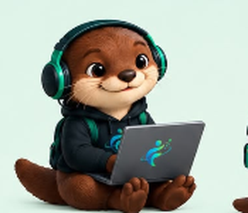

Primeiros Cliques
Oficinas de informática e ferramentas digitais, com aulas práticas sobre mouse, teclado, e-mail, editores de texto e aplicativos do dia a dia.
O que você aprende
- Ligar, desligar e organizar arquivos no computador.
- Criar e usar e-mail.
- Escrever e salvar documentos de texto.
Para quem: pessoas que estão começando a usar o computador.
Como a comunidade contribui: voluntários dão as oficinas e a comunidade doa computadores em bom estado.